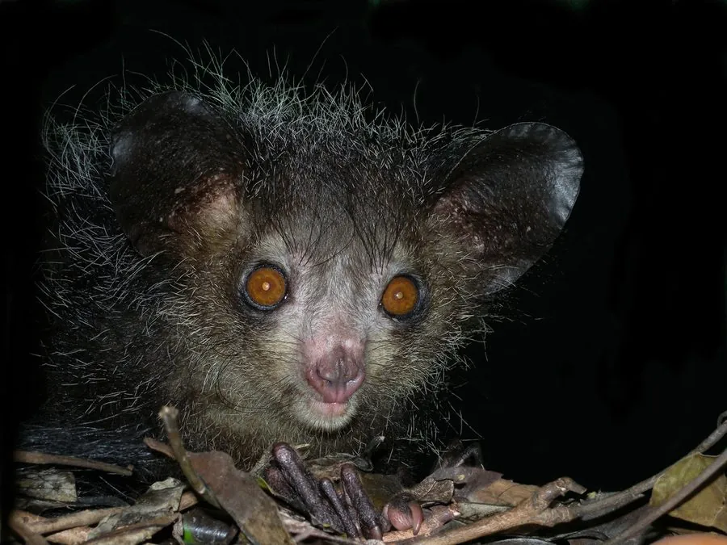

哺乳动物 · 动物界
指猴 Daubentonia madagascariensis

马达加斯加特有的夜行灵长类，中指细长如铁丝，靠敲击树干听声定位幼虫，门齿终生生长，外形奇特而常被误认为不祥之物。
- 分类
- 门脊索动物门纲哺乳纲目灵长目科指猴科属指猴属
- 栖息环境
- 马达加斯加东部的热带雨林、落叶林与人工林，多在树冠层活动
- 地理分布
- 马达加斯加东部及西北部的森林地区
- 保护级别
- IUCN 濒危（EN）；CITES 附录Ⅰ
物种志
指猴体长 30–40 cm，尾长 55–60 cm，体重约 2–3 kg。全身覆粗硬的深褐至黑色长毛，头部圆大，耳朵大而裸露，眼睛橙黄，门齿像啮齿类一样终生生长；第三指极度细长，可灵活伸入树洞钩取食物，是最具辨识度的特征。
它们仅分布于马达加斯加东部的热带雨林和部分落叶林，夜间在树冠层单独活动。觅食时先用中指有节奏地敲击树皮，凭回声判断蛀洞内是否有幼虫，再咬开树皮用长指钩出；也吃果实、花蜜、种子和真菌。每胎一仔，妊娠期约 160 天。由于栖息地破坏和当地将其视为不祥之物的捕杀，野生种群估计仅数千只，被列为濒危物种。
形态与习性
- 食性树干内的幼虫、果实、花蜜、种子与真菌
- 体长30–40 cm，尾长 55–60 cm
- 体重约 2–3 kg
- 寿命圈养可达 20 年以上
- 繁殖妊娠期约 160 天，每胎一仔
- 活动节律夜行性，独居，多在树冠层活动
趣味知识
- 指猴的中指比其他手指细长得多，能伸进树洞把幼虫钩出来。
- 它会用中指敲击树干，通过回声判断内部是否有虫道。
- 指猴的门齿终生生长，需要不断啃咬来磨损，这一点很像啮齿动物。